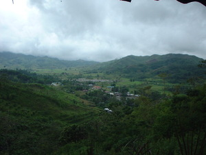
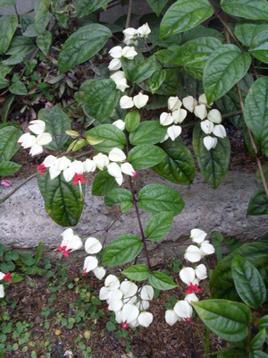
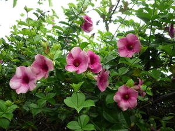
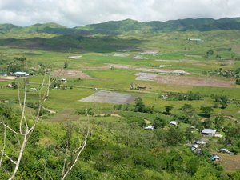

teles    
/tɔlɔs/
adj_rt.
“beautiful”
1.
adj.
(mateles, mA1-) beautiful; attractive; gorgeous; handsome; elegant; stately; graceful; nice; better; good;
Ka seini iyan sika se lalag ne egdayan ka te kameupiya te sabeka wey ke me kasangkapan naa.
Mateles ne egpamminehen ka me lalag te Magbebayè.
It is better to hear the words of God.
Eng. beautiful; attractive; gorgeous; handsome; wonderful; pretty; nice; lovely; elegant; stately; graceful; great; neat; precious; splendid; fancy; impressive
DDP: Attract (3.4.1.4.4), Beautiful (2.3.1.8.1)
Online dict status: -
Usage level: F
v.
for something (egmateles, immateles/migmateles, eg-mA1-) to become goood or nice
Eng. good, to become; nice, to become
Online dict status: -
Usage level: M
v.
for someone (egkatelesan, natelesan, katelesan, agent, egkA><an-) to be happy about something (e.g. a particular horse winning a fight) (igkatelesi, ingkatelesi, katelesi, reason, igkA><i-)
Eng. happy (about something); pleased with; enjoys; thrilled by
OCM: Drivers and Emotions (152)
DDP: Like, love (3.4.1.1), Happy (3.4.1.2)
Online dict status: -
Usage level: M
n.
(katelesan, kA><an-) wanted
Eng. wanted
Online dict status: -
Usage level: M
2.
n.
(katelesan, kA><an-) beauty
Eng. beauty; splendor; glory; greatness
Online dict status: -
Usage level: R
adj.
(tetelesi, rdpCV–i) very beautiful
Tetelesi wey meupiya se batasan te uyab ni Bura.
Bura's girlfriend is very attractive and has a nice character.
Eng. beautiful, very; attractive, very; stunning; gorgeous; splendid; exquisite
DDP: Beautiful (2.3.1.8.1)
Online dict status: -
Usage level: R
Updated by: RJH,RJH,AAA,QDL,NJK,NJK,QDL,RAA,RJH
Last updated: 27/Jan/2016
"Mateles" in song "Mateles ne marusilem"
"Mateles" in song "Mateles ne marusilem"
"Mateles" in song "Mateles ne marusilem"
This page last updated: 03-Jan-2020
Copyright © 2009-2014, Matigsalug Language Christian Association, Inc